Before Your Activity
If the route and timing allow, you may visit a coffee plantation before starting your trekking or other adventure. It can be a gentle introduction to Bali’s local coffee culture.
Imagine a refreshing pause in the cool highlands of Kintamani, surrounded by tropical greenery and the beautiful Mount Batur region. Add a coffee plantation visit to your journey for a taste of Bali’s local coffee culture, traditional preparation, and peaceful scenery. This visit is completely optional — you decide whether you would like to stop.
Make your journey from Kintamani towards Ubud even more memorable with an optional visit to a local Balinese coffee plantation. Discover Bali’s coffee culture, explore local coffee products, enjoy the peaceful surroundings, and capture beautiful holiday moments along the way.
Your visit is entirely optional. After your tour is booked, AWAN TREKKING will check your travel route and schedule to see whether a suitable coffee plantation stop can be arranged. The exact location will depend on your route, available time, and travel arrangements. There is no obligation to visit or purchase anything.
Please note: Coffee, souvenirs, tasting experiences, and other paid activities at the plantation may incur additional costs.
If you are interested, AWAN TREKKING can help check whether this relaxing cultural stop fits before or after your main activity. You are free to choose — it is not compulsory.
If the route and timing allow, you may visit a coffee plantation before starting your trekking or other adventure. It can be a gentle introduction to Bali’s local coffee culture.
Prefer a relaxing break afterward? If it fits the return route and available time, you may stop at a coffee plantation to enjoy the surroundings and browse local products.
Let AWAN TREKKING know if you would like to visit. We will check the route and available time; if you prefer not to stop, your trip can continue as planned.
Set in the cool highlands of Kintamani, with the magnificent Mount Batur region as a backdrop, a coffee plantation visit can be an educational and relaxing way to discover Bali's celebrated coffee culture. Activities vary by venue and availability.
Take a gentle walk around the plantation with a local guide, where available.
Learn about traditional coffee preparation and post-harvest methods, depending on the demonstrations offered at the plantation.
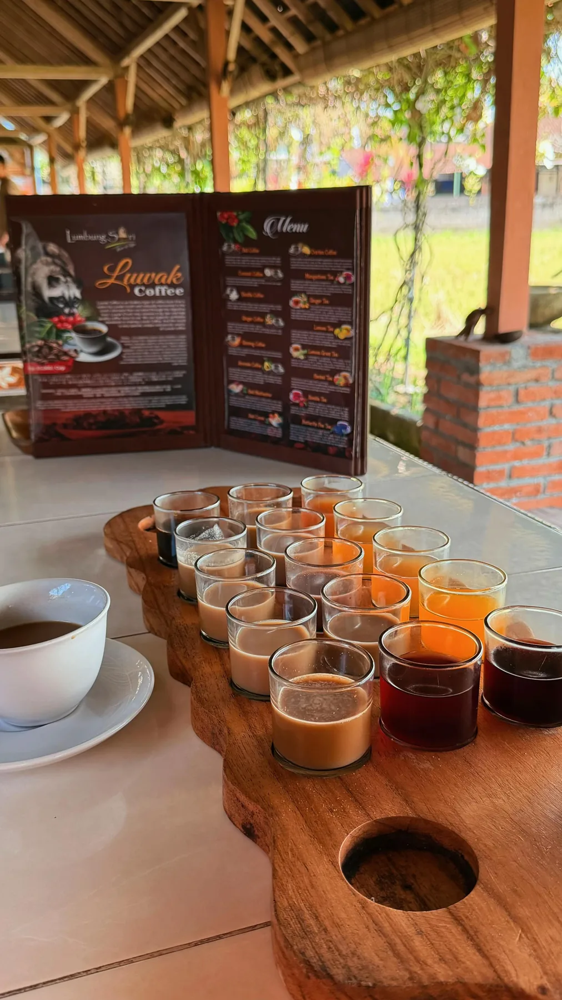
Some venues offer complimentary tasting of selected local drinks, which may include Balinese coffee, ginger coffee, coconut coffee, or cascara tea made from coffee fruit husks. Please confirm tasting availability at the venue.
Authentic kopi luwak may also be offered as an optional paid tasting, subject to availability and the venue's own charges.
Enjoy a peaceful break in the highland air. Depending on the location, you may find an open-air café, green valley views, plantation scenery, or photo spots such as a jungle swing.
Browse locally available souvenirs such as fresh or roasted coffee beans, packaged ground coffee, cascara tea, and Balinese gifts for friends and family.
All purchases are optional and paid for directly by guests.
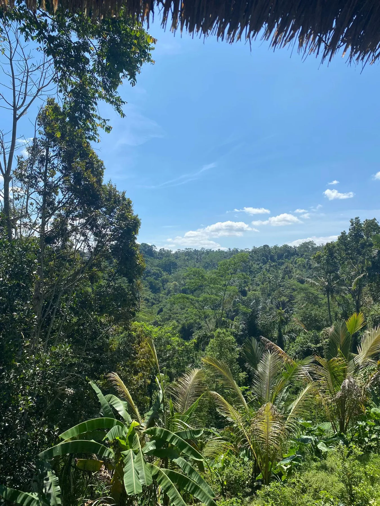
Kintamani's coffee plantations can offer a refreshing pause during your Bali journey, a chance to learn about local coffee traditions, and an opportunity to support local producers. A stop may fit after a Sunrise Jeep Tour, Mount Batur Trekking, or an ATV activity when the route and schedule allow.
A few simple tips to help you enjoy your coffee plantation stop.
We want every guest to know what the stop includes and which costs are separate.
A coffee plantation visit is entirely your choice. If you would like to go, AWAN TREKKING can arrange the stop without an additional arrangement fee when it fits your agreed route and schedule. Any purchases, tastings, entrance fees, or optional activities charged by the venue are paid separately by guests. Availability and costs depend on the plantation visited.
You are welcome to visit, look around, and enjoy the atmosphere without buying anything — or skip the stop and continue your adventure.
Interested in visiting? Ask AWAN TREKKING whether a coffee plantation stop can fit your itinerary. If it is not for you, no problem — the choice is completely yours.
Discover more adventures with Awan Trekking.
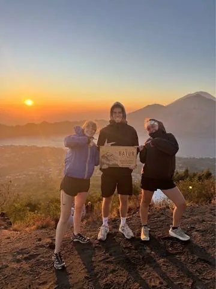
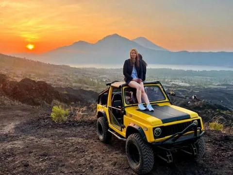
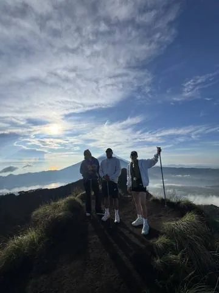
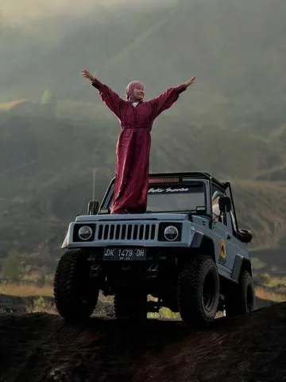
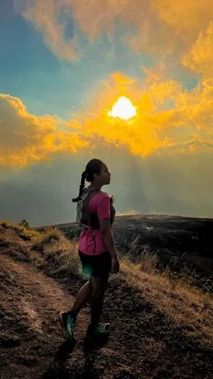
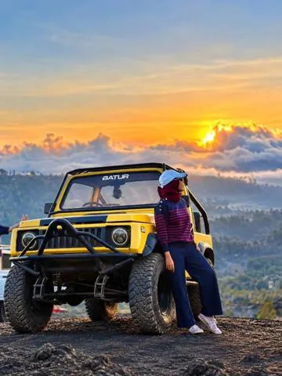
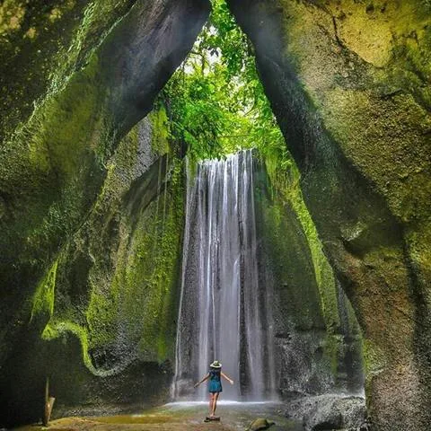
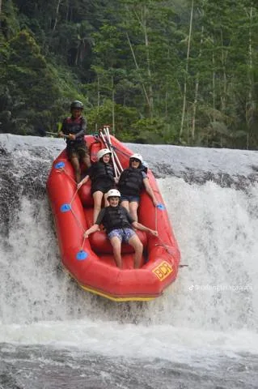
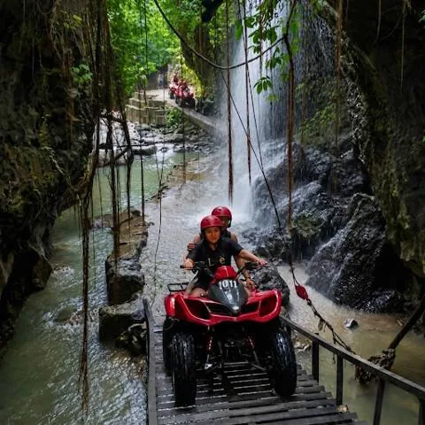
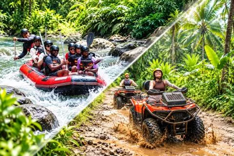
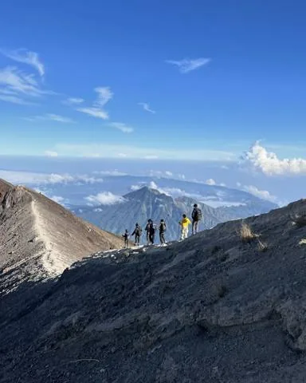
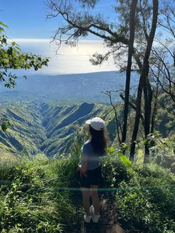
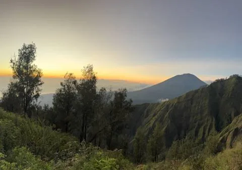